← Índice de los 69 tutes de IDA
Tute 30 · VLC · CVE-2008-4654
se conecta con: Vulnerabilidades (defensivo)
INTRODUCCIÓN AL REVERSING CON IDA PRO DESDE CERO PARTE 30.
VLC ( CVE-2008-4654)
Comenzaremos a tratar de solucionar el ejercicio propuesto en la parte 29, es un diff de dos versiones consecutivas de VLC y se da el CVE para tratar de ayudarse con la información que contiene el mismo, que es lo que en la realidad casi siempre tenemos.
Luego de instalar en una máquina virtual la versión vulnerable y a versión parchada, miraré la información del CVE a ver si me da una pista para poder ayudarme a no diffear tanto.
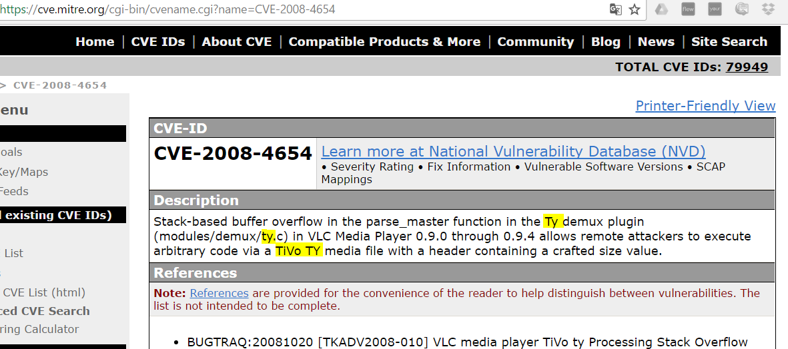
Si miro la carpeta donde está instalado el VLC, veo que el mismo se organiza para manejar diferentes extensiones con una carpeta llamada plugins.
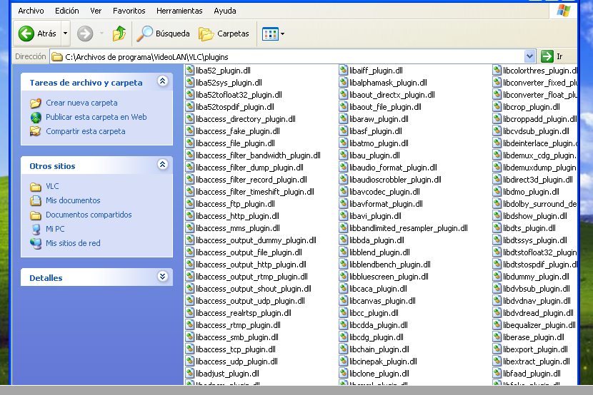
Veamos si por el nombre hay alguno que indique que trabaja con el formato TIVO o TY.
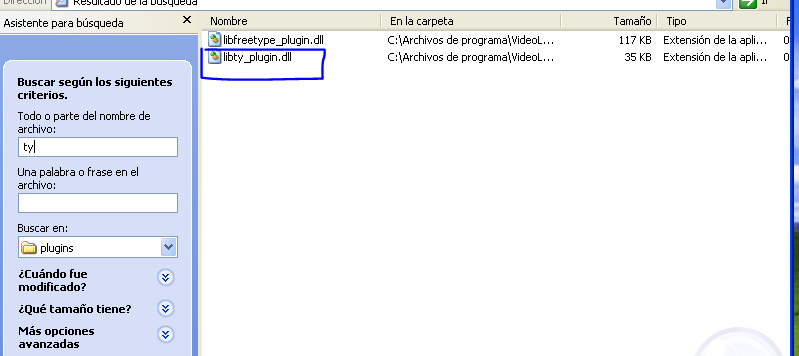
Bueno hay un libty_plugin.dll que parece ser bastante sospechoso, hagamos el diff en el mismo.
USANDO BINDIFF.
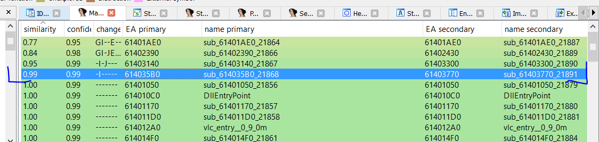
Vemos que hay cuatro funciones cambiadas, lo que normalmente hacemos es mirarlas primero a vuelo de pájaro, marcando las más sospechosas para luego si ponernos a reversear esas solamente más profundamente.
Buscamos un parche que impida un stack overflow, vemos por ejemplo esta función cambiada.
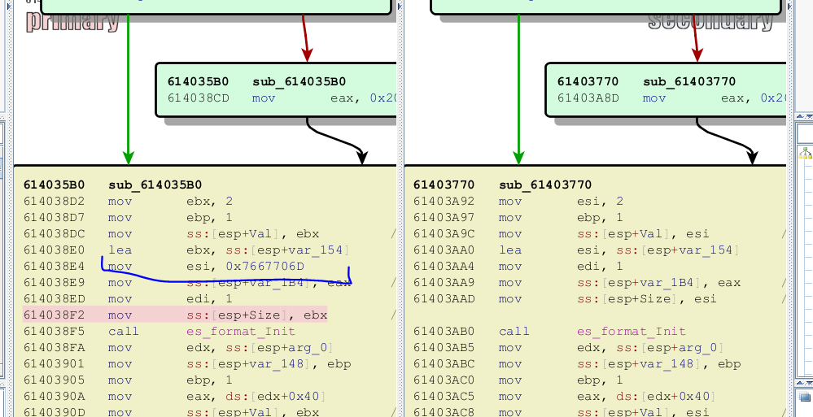
No se ve que eso impida nada solo una dirección a ESI, no puede haber problema con eso.
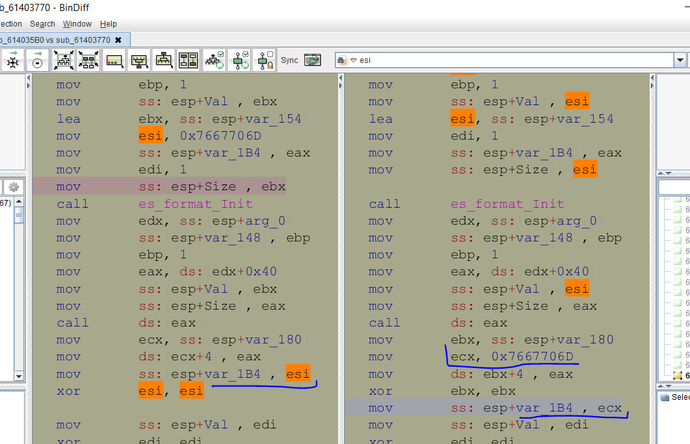
Vemos que es solo un cambio en el orden que no afecta en la vulnerable movía esa dirección a ESI la cual guardaba en la var_1b4 y en la parcheada lo mueve la dirección a ECX y lo guarda igual en var_1b4, nada por aquí.
En la siguiente lo mismo muchos cambios pero a veces usa otro registro para el mismo efecto, pero es lo mismo, cambios de orden, esto de abajo no afecta.
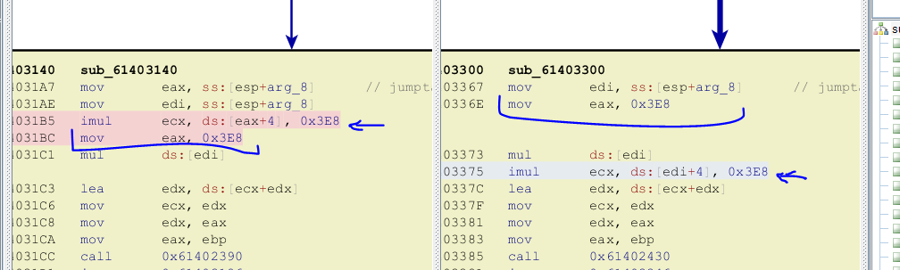
Vemos algunos cambios en la forma que calcula var_70 pero no veo que la lea o utilice en ningún lugar dentro de la función y es una variable local, tampoco se pasa como argumento ni se compara, lo tendremos en cuenta muy mínimamente, por ahora no es prioridad.
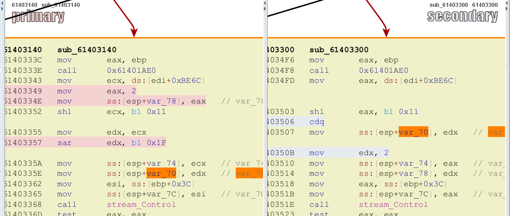
Esa función no tiene nada más, no se ve como candidata, sigamos mirando a vuelo de pájaro.
La siguiente está muy desordenada, veremos si podemos acomodarla un poco.
Haciendo click derecho - delete matches en los bloques que no coinciden, y luego marcando los que deben coincidir y haciendo add basic block match.
Hay bloques que se veían muy diferentes al estar mal matcheados pero al emparejarlos bien
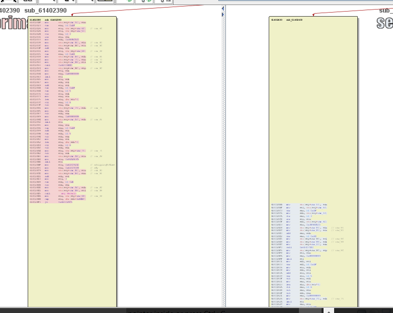
Si los miro se ven iguales ahora salvo que quedan un poco mal dibujados.
USANDO TURBODIFF.
A veces funciones que quedan muy desarmadas conviene ayudarse con el turbodiff también que al menos no se desarman tanto allí.
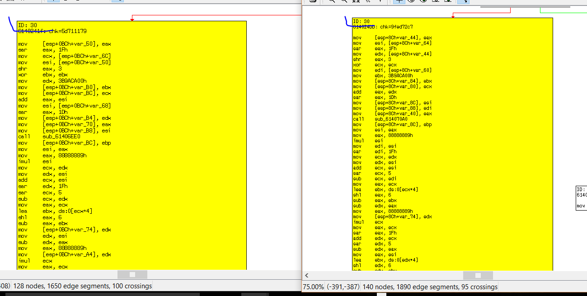
Por los id de bloque vamos mirando.
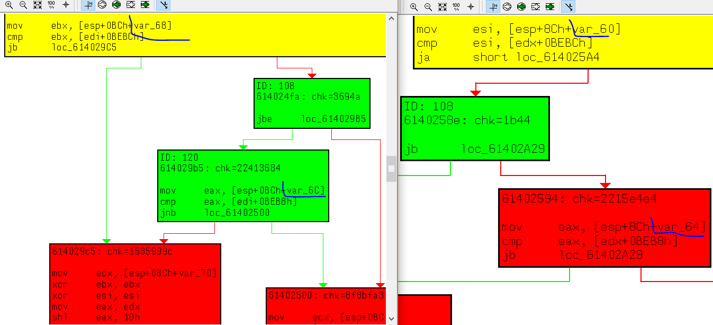
Vemos que las variables están corridas pero las comparaciones son similares (68-6c y en la nueva 60-64)
Tampoco hay cambio de signo en la comparación (JB por JL o algo así, se mantiene)
La inversión de comparación JA por JB, si se invierten los destinos es lo mismo, no cambia nada.
Sigamos mirando.
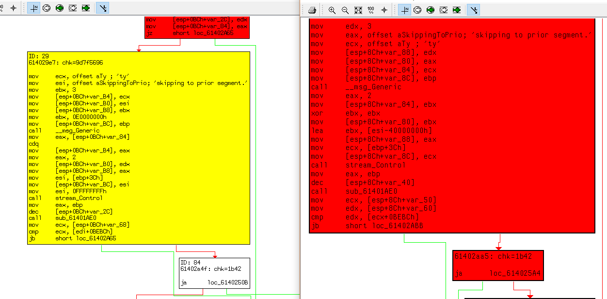
A vuelo de pájaro acá se ve bastante similar no hay cambio de signo en la comparación, cambios menores.
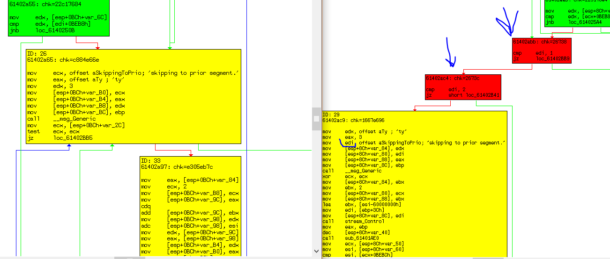
Allí vemos un par de filtros que el viejo no tiene, igual EDI es pisado apenas más adelante, así que pueden ser casos agregados, los dejamos marcados pero no se ve como sospechoso de overflow.
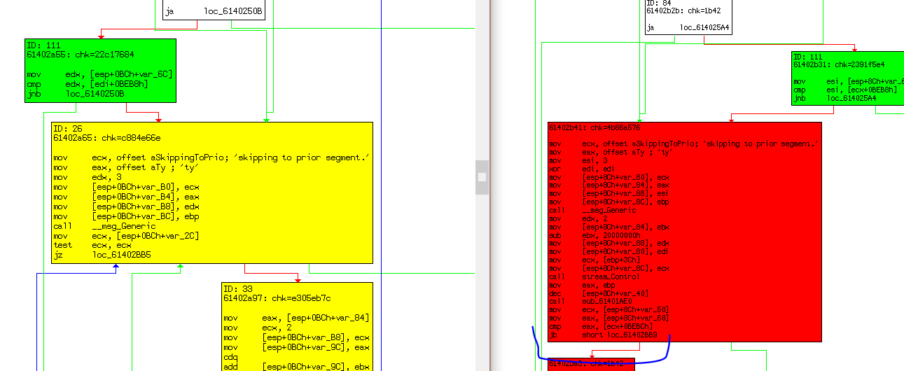
Vemos allí el JB en la vieja esta un poco más abajo, hay cambios aquí para estudiar más adelante si no hallamos nada más.
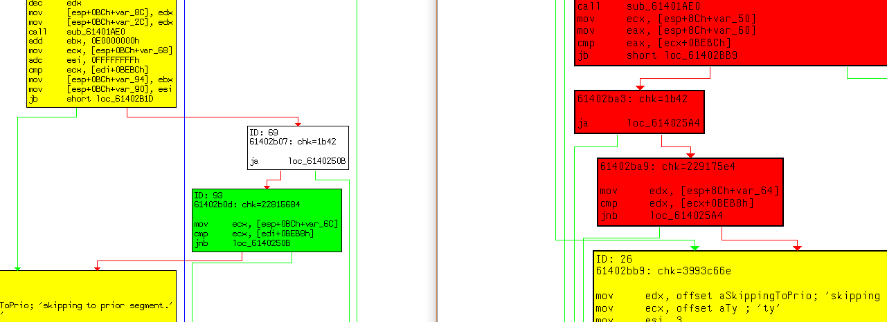
Recordemos que no estamos reverseando a fondo solo buscando algo que nos llame la atención como muy probable.
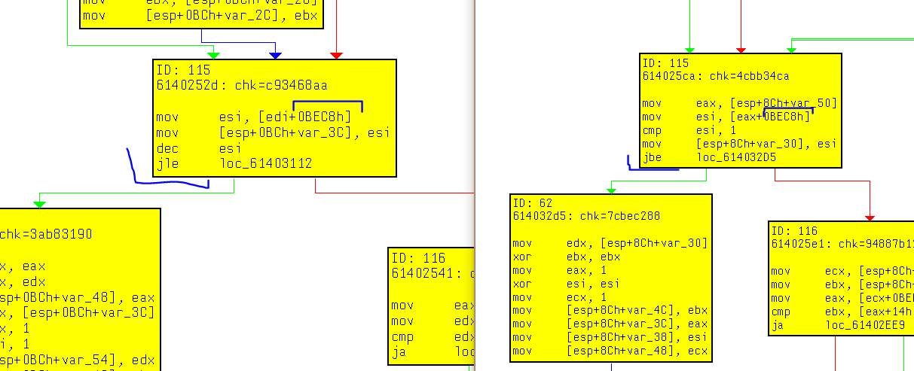
Aquí si se ve algo muy posible que afecte, un campo de la estructura que se compara, y en uno toma una decisión con JLE y en el otro con JBE eso es un cambio de signo y lo apuntamos como muy posible.
Es una muy función muy compleja la analizaremos luego ya vimos algo muy posible, lo anotamos y miremos un poco la última.
En esta función, el mismo campo de la estructura afecta y es más fácil de ver
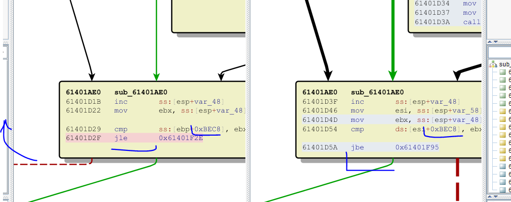
Es un loop y el valor que decide la salida es un contador que está en var_48 y se va incrementando y se compara con el máximo.
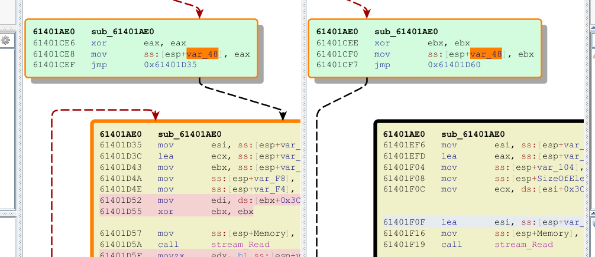
Antes de entrar en el LOOP se inicializa a cero el contador, creo que esta es más fácil para empezar a reversear que la anterior, aunque ambas pueden ser la culpable, empezamos siempre por la mas facil, jeje, esta última.
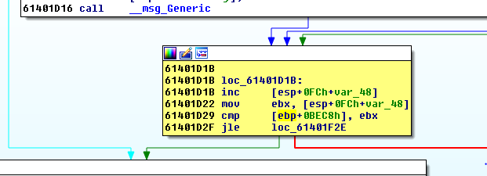
Empecemos con paciencia pues se ve complejo, renombramos a var_48 como contador.
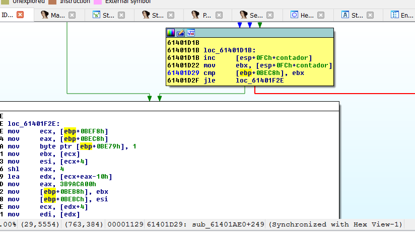
Obviamente EBP no es la base de la función, en este caso es la dirección de la estructura, si vemos en casi toda la función se mantiene igual manejándose a partir de EBP + XXXX los campos de la misma.
EBP toma el valor desde aquí.
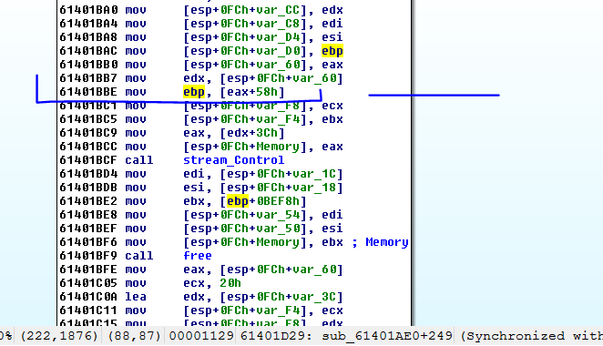
A partir de allí EBP es la dirección de la estructura y cambia aquí.
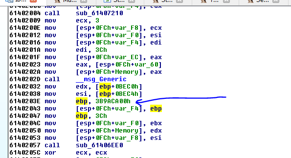
Allí cambia de valor EBP, o sea que entre ambas direcciones EBP se mantiene constante y es la dirección de la estructura.
Vemos que es una estructura muy grande hay campos 0xbexx lo cual es una estructura gigante, hagámosla, creo que la mayor parte de los campos son 0xbexx así que podemos hacer una estructura de largo 0xbf00 que abarque los que vemos para agrandar o achicar hay tiempo.
Voy a la pestaña estructuras y apreto INSERTAR para agregar una.
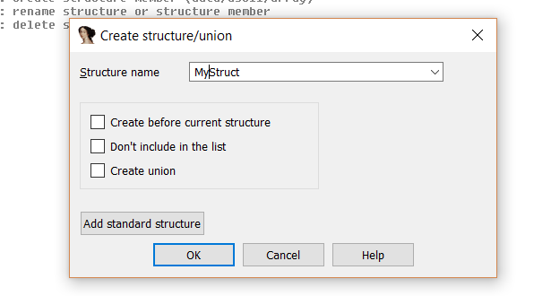
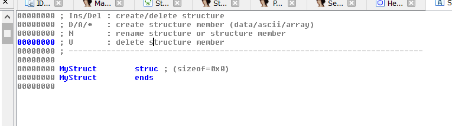
Me pongo en ends y apreto D para agregar un campo de un byte.
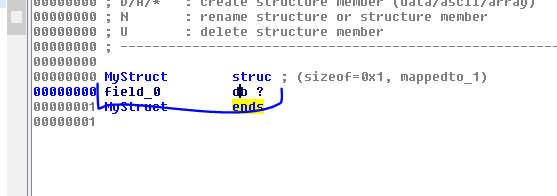
Hago click derecho - EXPAND STRUCT TYPE.
Le agrego 0xBF00 por un byte más no se muere nadie jeje.
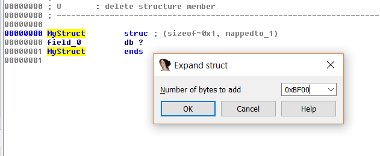
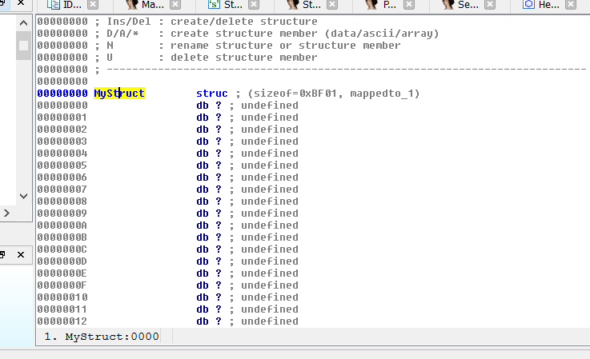
Bueno ahi esta.
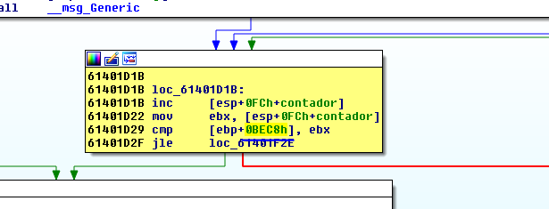
Obviamente si fuera posible que el campo 0x0bec8 sea negativo por ejemplo 0xFFFFFFFF, será menor que los valores positivos (1, 2, etc) que vaya tomando el contador ya que se considera el signo y el loop se repetirá bastante más de lo pensado.
Puedo renombrar el campo como MÁXIMO ya que se supone que es el valor máximo que debería repetirse el ciclo antes de salir.
Apreto T
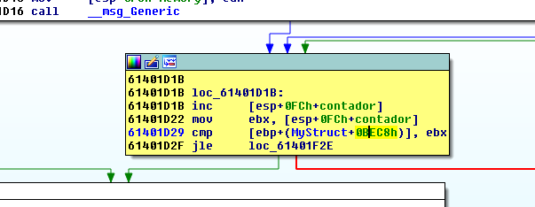
Y debo ir a la estructura a 0xbec8 y crear un campo DWORD ya que es lo que es.
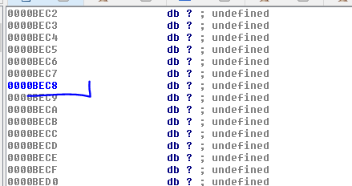
Apreto D varias veces hasta que quede DD.
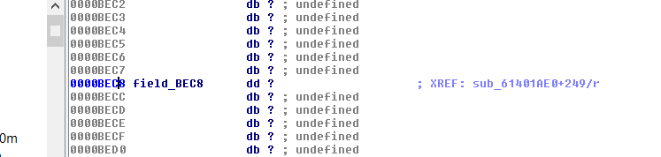
Lo renombro a máximo.
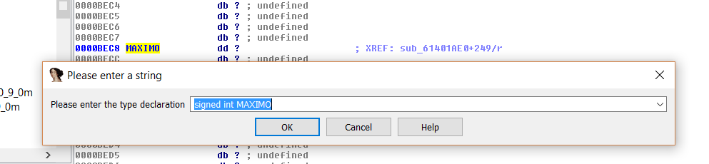
Puedo apretar la Y y cambiarle el tipo ya que sé que es SIGNED INT, por el JLE que lo compara.
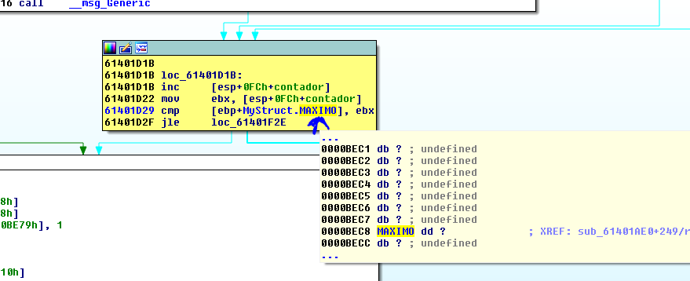
Ahí quedo mas lindo, el signed int lo pongo aunque no afectara mucho, salvo que use el decompiler hex rays lo cual no haré por ahora, pero me gusta acomodar bien las cosas.
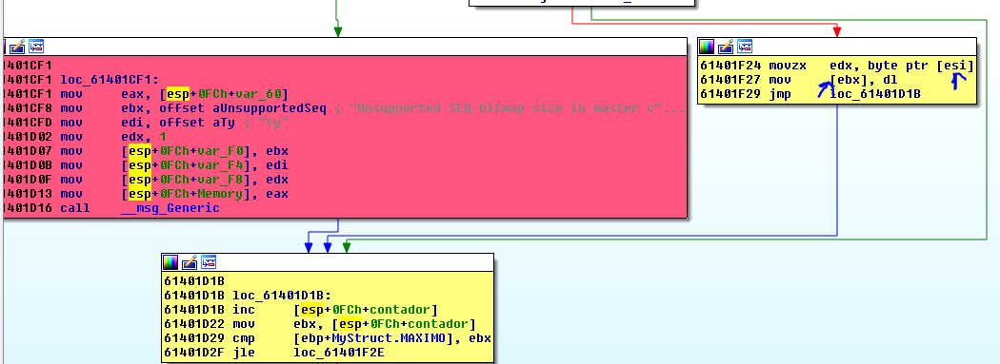
Seguiré estudiando.
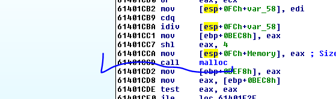
Vemos que hay un malloc, la misma es la función usada para reservar un buffer dinámicamente, no en el stack, sino en la memoria.
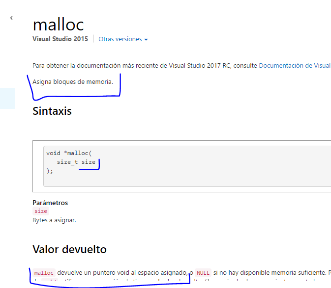
Se le pasa un único argumento que es el tamaño a reservar o size.
Aquí el programa usa el método que ya vimos de guardar en el stack en vez de pushear, ya sabemos que si hacemos click derecho, podemos arreglar la instrucción.
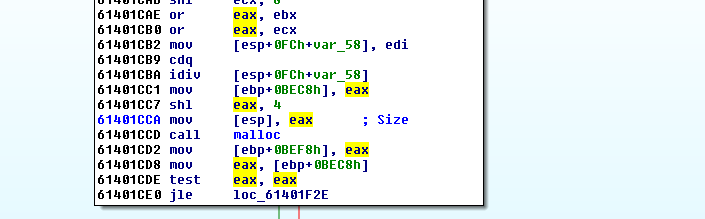
Allí vemos que el argumento size está en EAX y proviene de hacer varias cuentas.
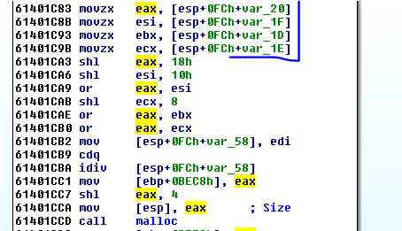
Vemos cuatro variables del tipo byte a partir de las cuales se realizan las operaciones que arman el size el cual se le hace al final SHL EAX, 4 antes de pasarlo a malloc.
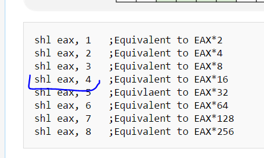
El shift de bytes SHL EAX, 4 es equivalente a EAX por 16, pero antes de multiplicar lo guarda en la variable MAXIMO si apreto T veo que es la misma.
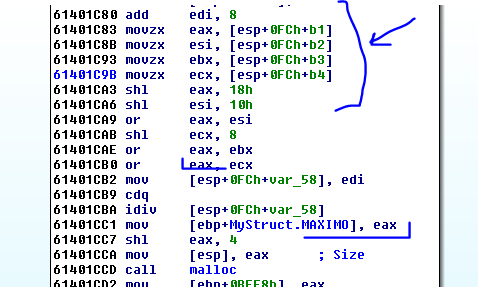
Vemos que los valores negativos de máximo son filtrados aquí.
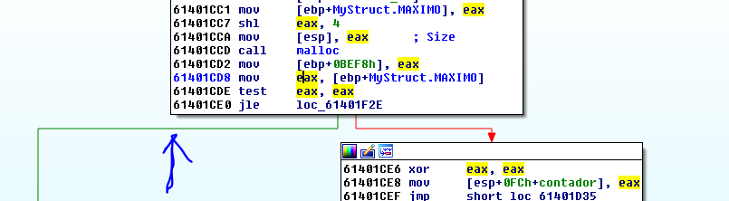
Así que el tema no es un valor negativo de máximo pues el mismo es filtrado
En la función parcheada vemos que no hace el SHL o sea no multiplica por 16, directamente el valor de la cuenta lo usa como size del calloc.
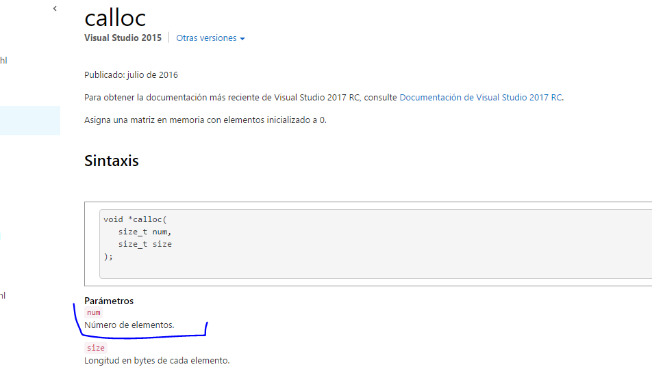
Vemos que en vez de multiplicar por 16 lo que hace es pasarle a calloc que tiene un argumento más, el tamaño de cada elemento que es 0x10, con lo cual la multiplicación la realiza la api, de size por tamaño de cada elemento.
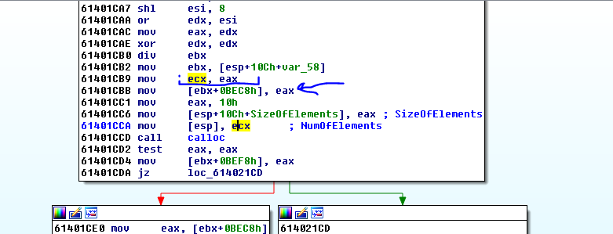
MALLOC o CALLOC se usa para reservar memoria, las direcciones que devuelve son variables no siempre nos dará una zona con la misma dirección de memoria, más adelante estudiaremos el heap o la forma de reservar memoria, pero por ahora, nos dará una zona de memoria para trabajar del tamaño que le pidamos.
En el vulnerable antes de calcular el size multiplica MÁXIMO por 16 y luego lo pasa a malloc en el parcheado no lo hace y pasa directamente el MÁXIMO a calloc y está calcula internamente la multiplicación por 16 que es el size de cada elemento.
El problema es que sí MÁXIMO es por ejemplo 0x20 bytes y lo multiplica por 16 será igual a
.
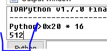
Reservara 512 bytes y luego copiará 0x20 pues compara dentro del loop y sale cuando el contador es mayor que máximo.
Ahora que pasa si el valor de MÁXIMO es positivo pero al multiplicarlo por 16 da más chico que el valor inicial.
Si MÁXIMO es 0x10000001 al multiplicarlo por 16 nos da 0x10 con lo cual se reservaran solo 0x10 bytes y cuando se copie en el loop ira escribiendo de a 1 hasta que el contador llegue a 0x10000001 lo cual desborda el buffer copiando más de lo reservado o del size del buffer, lo cual es la definición de overflow, aunque en este caso no es un stack overflow sino un heap overflow.
Mientras que en el parcheado el calloc no permite y evita que la multiplicación interna pueda darse vuelta y ser el resultado menor que el máximo, por lo cual se repara una posible vulnerabilidad.
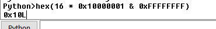
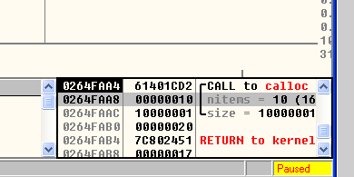
Allí probare que pasándole los mismos valores que a malloc, devuelve cero o sea no alloca y no devuelve ninguna dirección de memoria reservada, mientras que haciéndolo con malloc, allocaba 0x10 lo cual si funcionaba y escribía dentro de un loop de maximo 0x10000001 provocando BUFFER OVERFLOW,
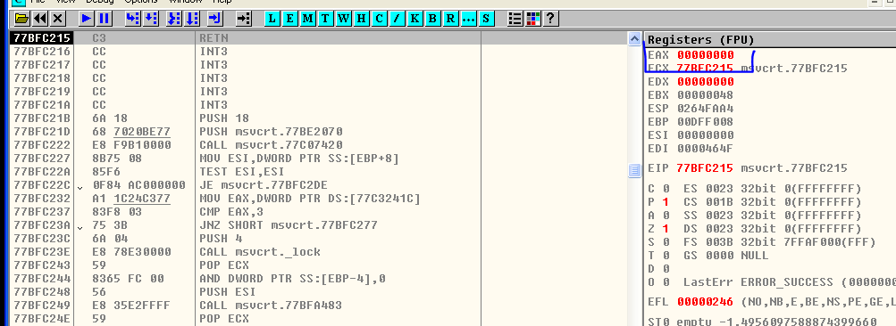
Allí se ve a la salida del calloc EAX vale cero, mientras que en la vulnerable usa malloc y alloca igual.
Sigamos analizando a ver qué más hay.
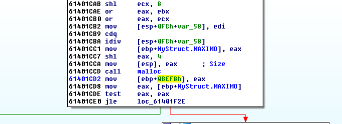
Allí guarda la dirección del buffer reservado en el heap, puedo renombrarlo, para eso iré a estructuras y apreto D hasta que sea un DWORD.
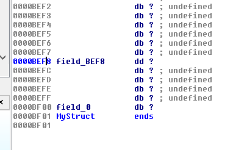
Lo renombro.
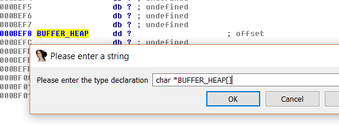
Bueno le pongo con Y que es una variable puntero, que guarda la dirección del buffer que reservo en el heap, como no sé que hay allí, le puse que es un array de caracteres , o sea un buffer de bytes pero puedo cambiarlo si veo que es otra cosa.
En el lenguaje IDA es un OFFSET o sea una dirección que apunta a algo.
Bueno como vimos malloc reserva el espacio de memoria del size que le pido y me devuelve la dirección de dicho buffer la cual guardo como toda dirección en una variable del tipo puntero.
Allí vemos dentro del loop que toma la dirección y escribe, le suma EDI que es el mismo contador por 16.
También hay acá dentro del LOOP escribe también en este otro EBX que cambio viene de ese EDI, tendríamos que ver dónde está escribiendo aquí.
Vemos que esa dirección de destino viene de acá
ECX + 0c es igual a EDI, así que buscaremos de donde viene ECX.
ECX sale de acá
Mueve a ECX el valor de EDI y le suma ESI.
Si apreto T.
Veo que ESI es la dirección del buffer en el HEAP y le suma ECX que viene de EDI que es el contador, así que en esta función hay heap overflows ya que como vimos máximo puede ser un valor más grande que el size que se allocó y desborda.
Hay otra modificación que pasa un poco desapercibida.
Veo que hay llamadas a una función stream_Read, podría leer a un buffer temporal una parte del archivo.
Vemos que allí hay un LEA, así que será un buffer en el stack.
Y las variables que van a continuación son parte del buffer pues no se guarda valor nunca en ellas, solo se lee, así que es seguro que llenará las variables a continuación cuando llena el buffer.
Así que el buffer continua hasta aquí.
Ya que var_30 ya tiene referencia como otro buffer, así que marcare para ver el size del buffer.
Ahora hago click derecho ARRAY y acepto.
Veo que el size es 12.
OOPs veo que el buffer siguiente no lo llena sino que lee bytes de allí, así que es parte del mismo buffer de arriba porque no puede leer bytes del mismo si no tiene ninguna referencia donde se llena.
Así que veamos bien si seguimos mirando vemos que el buffer continua hacia abajo hasta aquí, todas las otras variables intermedias solo tienen acceso de lectura, así que se inicializan en el mismo buffer.
Ahora si incluso la var_1c es otro buffer que se usa para llenar en otra llamada a stream_Control.
La cuestión es que es un buffer chico, solo 32 bytes, si se le puede pasar un valor grande desbordara.
Acá vemos el parche en la nueva sobre ese valor chequea que si es más grande que 8 no va a stream_Read.
Allí está seguramente dentro de stream_Read habrá algún memcpy que copie DWORDS por eso compara si es mayor que 8, pues si copia más que 8 dwords, será 8 *4 mayor que 32 que es el largo del buffer, así que poniendo ahí un valor más grande que 8 tendremos un stack overflow.
Busquemos un archivo .ty para probar.
https://samples.libav.org/TiVo/test-dtivo-junkskip.ty%2B
Ese sample con un poco de ganas lo convertí en un POC que produce el stack overflow, cambiando el valor que se filtra y ajustando algunos más que hay alrededor para que llegue al punto del stream_Read.
Allí lo probé en un OLLYDBG en un XP que tengo de pruebas, pero funciona salta a ejecutar la dirección 0x44434241 que coloque en el archivo.
El siguiente ejercicio es tomar el archivo original y modificarlo armando un POC como el que hice yo para que produzca el stack overflow, es sencillo, ya está todo analizado con DEBUGGEAR un poco lo lograran.
Hasta la parte 31
Ricardo Narvaja